把 AI 从“工具清单”变成“业务动作”
左侧承载观点、步骤、数据或案例拆解；右侧用 image2 配图，把抽象概念变成可感知的场景。
1 看见场景
2 拆成流程
3 做出原型
4 复盘沉淀
如何看待，AI 新变量，对产品经理行业的影响？
左侧承载观点、步骤、数据或案例拆解；右侧用 image2 配图，把抽象概念变成可感知的场景。
AI 不是魔法按钮，而是一个可以被设计、训练和复用的业务变量。
招聘不再只看“会写需求”，而是更看重 业务理解、数据判断、AI 协作和落地推进。
能把用户问题拆成业务方案，并用 AI 快速验证的人，会更容易拿到机会。
不是先学完所有工具，而是先拿一个真实问题做出能展示的结果。
会用 AI 的产品经理，不是少写文档，而是更快验证业务判断。
过渡页测试样例

熵变智元